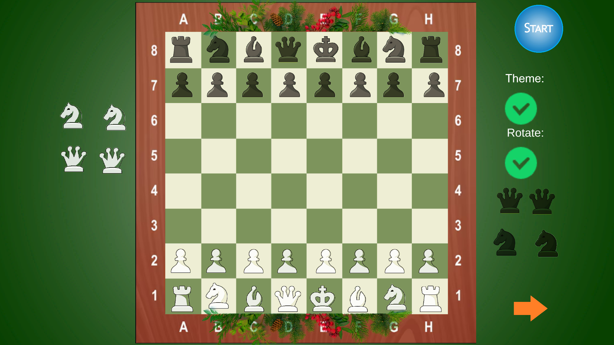
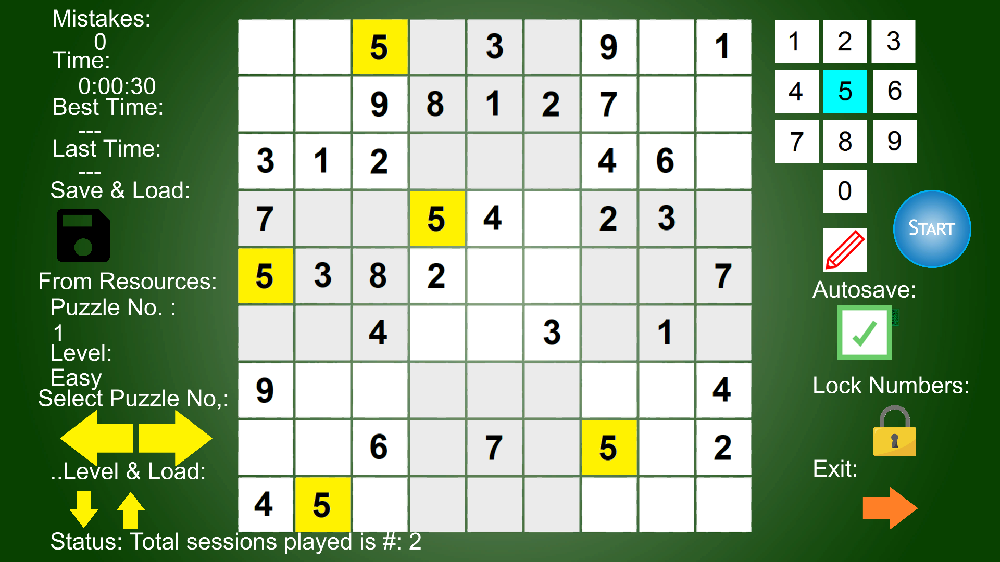
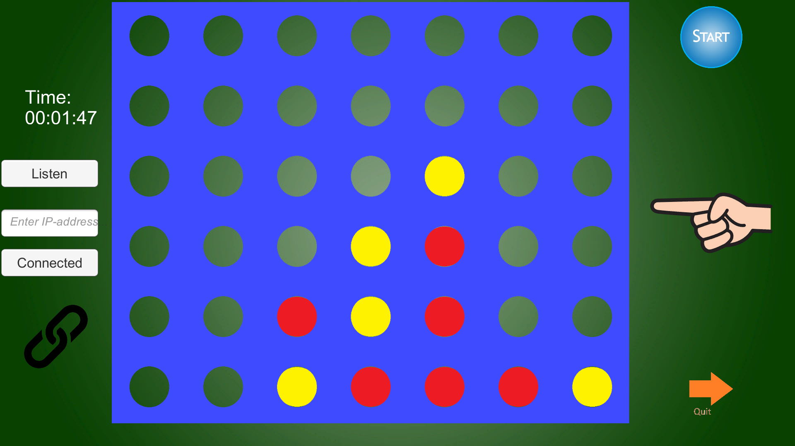
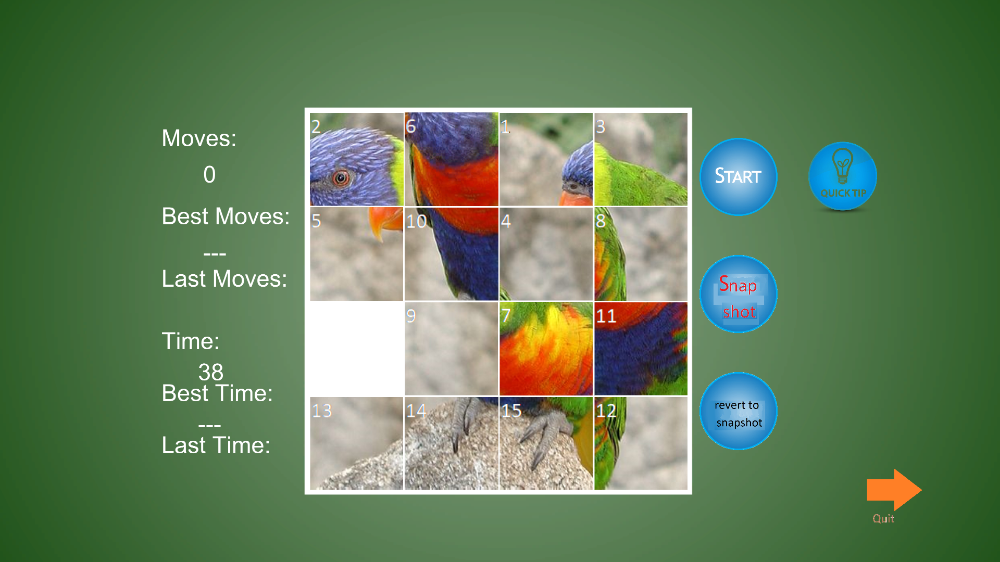
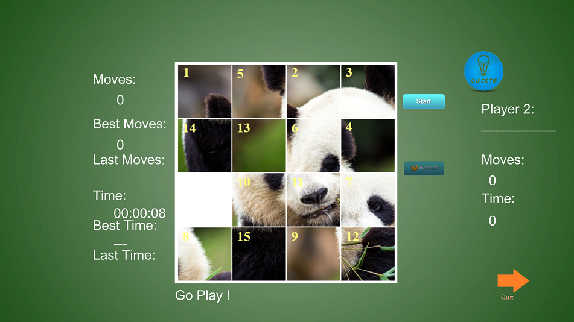
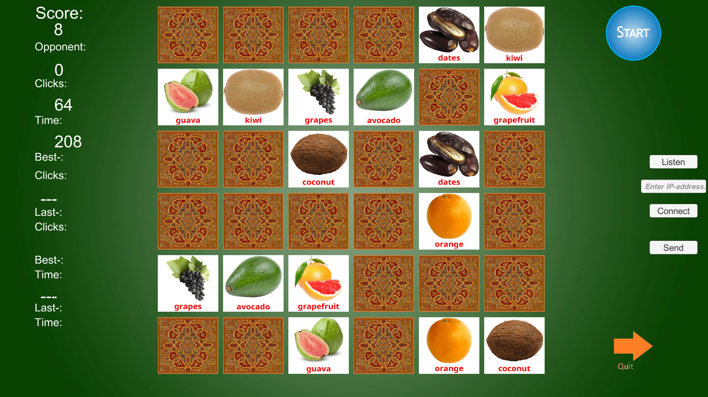

Telejazz Media Company | Certified Software
Software Applicaties voor Windows
Chess Set Christmas Edition
Vier-op-een-rij Premium
Custom Sudoku Premium
Net Memory Game Series Premium
Net Memory Games
Net Memory Free
Net Memory Qt Animation
Net Memory for the Mac
Memory Game WebGl Series
DefBingo
Schuifpuzzel
Net Mastermind
Net Lingo
Net Hangman
De tafel van X:webapp
Clock & Countdown Timer
Foto's & Video's
Video's
Foto's
Webshop
Webshop
Microsoft Store Support Page van Net Memory Games..
1 / 6

Chess Set Christmas Edition
2 / 6

Custom Sudoku
3 / 6

Net Connect 4
4 / 6

Schuifpuzzle
5 / 6

Sliding Tiles Puzzle Panda
6 / 6

Memory Game Fruits
Korte Biografie van Hanno Pondaag
Tel. mobiel: 06 588 488 25
Laatste Update: 20 Oktober 2025
There is a workaround when remove one or more of many of the software titles I previously had from the Microsoft Store under my developer name Hanno Pondaag and would like to reinstall one or more of the many titels : go to the Webshop and you will find them there, with the exception of the following titles: the latest version of Custom Sudoku, Memory Game Flowers, Memory Game Alphabet, Memory Game Fruit, Memory Game Vegetables and more. Important News: ALL NEW INFO AVAILABLE OF PORTFORWARDING ON KPN SAGEMCOM BOX 12 IN THE NETHERLANDS. INFO ON NET CONNECT 4 PAGE, ENGLISH MOBILE PAGE, FOR TESTCASE 1. SHOULD APPLY TO MEMORY GAMES SERIES AS WELL !! Custom Sudoku Update is er, met o.a. optionele: Autosave elke minuut. Sudoku update/makeover (betere besturing) met vernieuwde lay-out ontwerp is er ! In de Microsoft Store en op www.xbox.com/nl-Nl/ de officiële website van Xbox Nederland/ de Microsoft online Store voor Xbox Series X, Xbox Series S en de Xbox One. Gefixt/opgelost: dat wat als hardnekkig probleem leek, het gedrag van het uiterste hokje in de hoek rechtsonder op het speelveld in het 9e 3x3 hok. Het puzzelnummer en de moeilijkheidsgraad zijn gecorrigeerd voor actuele workload en opgeslagen puzzels. En zowel puzzelnummer en moeilijkheidsgraad zullen ook gecorrigeerd zijn voor de ingebouwde puzzels die nog opgeslagen kunnen gaan worden. Toegevoegd: 'browse through' d.m.v. de pijltjes besturing om door de puzzels te bladeren (let op: er na het gele rondje met de twee kromme pijltjes, die in tegengestelde richting wijzen, selecteren !). Direct selecteren van puzzles (dus zonder eerst Start na het selecteren te hoeven klikken of tikken voor correcte weergave van puzzelnummer en moeilijkheidsgraad !). Autosave bij Closing of Exiting; automatisch opslaan bij afsluiten of verlaten van het programma. Eindeloos en ultiem puzzel- en speelplezier voor jong en oud ! Als updaten niet direct lukt voor bestaande gebruikers met Windows 10/11: probeer het eerst in de bibliotheek van de Microsoft Store toepassing en anders eerst verwijderen dan herinstalleren. Én de oude WebGl versie van Custom Sudoku is getest op een Apple computer: een Mac. Die is weer online. De internet spellen en spelletjes zijn uitvoerig getest. De internet spellen en spelletjes zijn uitvoerig getest en betrouwbare software technologie, met name voor uw thuisnetwerk maar tevens berekend op, en met goede resultaten, gebruik met het internet. Voor de Internet spellen, Net Memory spellen en Vier Op Een Rij spel o.a. geldt: maak de verbinding vlot genoeg samen; er is een time out, na 30 seconden ongeveer. Hanno Pondaag is een officiële Microsoft Partner. Email: info@telejazz.nl voor al uw vragen en opmerkingen. Doneren via PayPal: paypal.me/HPondaag en/of paypal.me/telejazz https://hannopondaag.github.io steunt goede doelen zoals Wereld Natuur Fonds, Unicef, World Food Program van de Verenigde Naties, de Hartstichting, Hersenstichting, de Vrienden van de Olifant: olifanten.org en Foodwatch. Groetjes aan Miranda, Emma, Demi, Pien, Bianca.